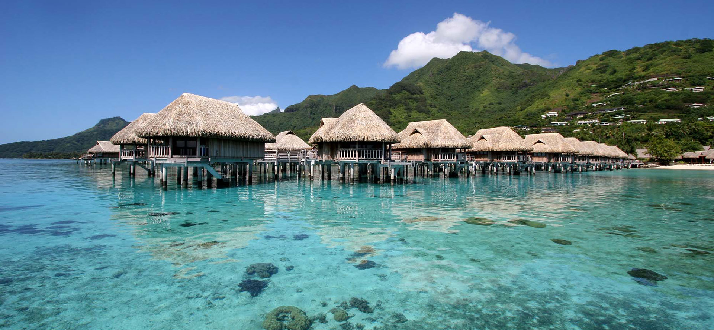

Lodging on the Island of Taniti
Tahiti's lodging options are as diverse and vibrant as its coral reefs. Imagine waking up in a cozy thatched-roof hut, listening to the whispers of palm trees and the gentle lap of the lagoon. Sunlight filters through woven walls, making patterns on the floor. Outside, your private veranda awaits, hammock swaying and hibiscus blooms greeting the day. The lodging options in Tahiti are most commonly among these 3:
- Privately Owned Bed & Breakfast
- Resort
- Local Hotels
The local hotels always have vacancy and don't take reservations, so you'll just visit one and find a room once you get there The resorts on the other hand, usually are chain resorts, with locations on other islands as well. You'll need to visit their own site to reserve a room. Lastly, the Bed & Breakfasts can be found on home-sharing sites like VRBO.